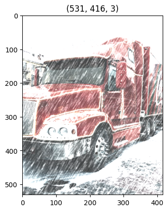
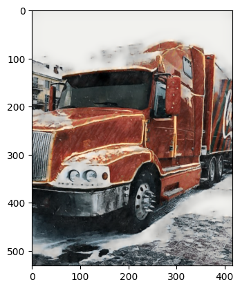

Snow removal
[1]:
#Please note that this cell can be ignored if you installed neural_de from pip
import sys
sys.path.append("..")
import time
Imports
[2]:
import cv2
import matplotlib.pyplot as plt
from pathlib import Path
from neural_de.transformations.de_snow_enhancer import DeSnowEnhancer
Image enhancement
1. Load your corrupted image
[3]:
start=time.time()
input_path = Path('../examples/images/corrupted_truck.png')
corrupted_image = cv2.imread(str(input_path))
# Channel reordering
corrupted_image = corrupted_image[:, :, ::-1]
[4]:
plt.imshow(corrupted_image)
plt.title(corrupted_image.shape)
[4]:
Text(0.5, 1.0, '(531, 416, 3)')

2. Initialize the purifier
Please note that this method require an access to MinIO in order to retrieve model’s weights (at least the first time you launch the library). Once the download is complete you can comment or remove the following cell. The model will be stored locally.
[5]:
purifier = DeSnowEnhancer()
# batch size = 1
purified_image = purifier.transform([corrupted_image])
[03-20 09:40:00] {/home/jovyan/Maturation/NeuralDE/examples/../neural_de/utils/twe_logger.py:123} INFO - Logger: name: neural_de_logger, handlers: [<StreamHandler stdout (DEBUG)>]
[03-20 09:40:00] {/home/jovyan/Maturation/NeuralDE/examples/../neural_de/transformations/de_snow_enhancer.py:42} INFO - Checking model availability...
[03-20 09:40:00] {/home/jovyan/Maturation/NeuralDE/examples/../neural_de/utils/model_manager.py:88} INFO - Model already available locally, skipping download
[03-20 09:40:00] {/home/jovyan/Maturation/NeuralDE/examples/../neural_de/transformations/de_snow_enhancer.py:57} INFO - Loading model. Using cpu
[03-20 09:40:00] {/home/jovyan/Maturation/NeuralDE/examples/../neural_de/transformations/de_snow_enhancer.py:51} INFO - Model correctly loaded to cpu
[03-20 09:40:00] {/home/jovyan/Maturation/NeuralDE/examples/../neural_de/transformations/de_snow_enhancer.py:76} INFO - Converting list like batch to numpy array
[6]:
plt.imshow(purified_image[0])
[6]:
<matplotlib.image.AxesImage at 0x7f5d01ef7040>

[9]:
end=time.time()
print("temps final : ",end-start)
temps final : 3.3435487747192383
[ ]: